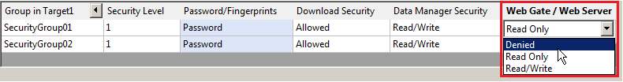

|
|
|
|
|
|
|
|
Web Server and Web Gate security stops unauthorized users from using the Web Server and Web Gate to access secured target machines.

You can also use the Access Control feature, available in the Web Server properties, to only allow PCs with specific IP Addresses to access the target machines through the Web Server. See Section 23.2.3.2, Access Control Settings.
In addition to defining Web Server and Web Gate security with passwords, each variable has a Sharing property that you can set to Read-only or Read/Write. Even though a user may log in with a Read/Write password, the variable value cannot be changed if its Sharing property is set to Read-Only. See Section 22.1, Sharing Data Between Tablet, Smartphones, and Target Machines.
The Web Gate/Web Server Security property is grayed out if the Web Server setting is disabled in the target properties. Web Server and Web Gate security must be enabled before you set up security groups with Web Gate/Web Server security, see Section 4.8.7, Security Settings.
To set up a security group with Web Server and Web Gate security:
In the Security Editor, use the Web Gate/Web Server drop-down list to select one of the following:
Denied—The security group cannot access a target through Web Gate or Web Server.
Read Only—The security group can monitor variables but cannot change them from Web Gate or Web Server.
Read/Write—The security group can monitor and change variables from Web Gate or Web Server.
